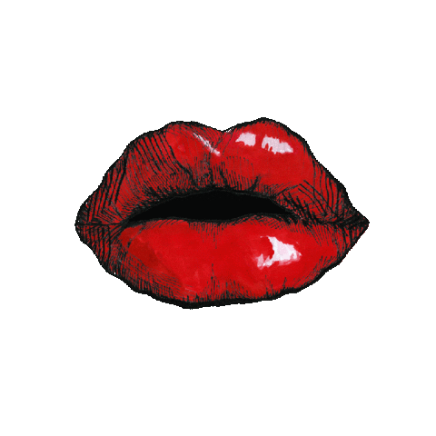

Vildan Yıldız 
HELLO!
I am a college student and also a beginner web developer. It is all about me for now but keep in mind that this portfolio may improve itself by time :) I am hardworking and passionate about what i am doing. So i thougt you might want to hire me.
Education
- Bachelor of Education, English Language Teaching - Kocaeli University
Work Experience
*I haven't got the chance to be employed as a web developer or related to what i am learning, but who knows, maybe you might think to hire me and i can shoot my shot. Yet, i have worked in some unrelated places, my only goal was to earn my pocket-money.
Kitchen staff member - DOMINOS
- made pizzas
- cleaned the workplace
- packed the orders
- interacted customers as a cashier
Store Cashier - PIDEM
- handled the cash register operations succesfully
- took orders from customers and gave them what they wanted in a correct order
- communicated foreign customers
- helped customers with special diets, offering them what they might want to order from the menu
- collabrated with another cashier, helped each other during busy time
- prepared drinks
Skills
- Teamwork
- Time Management
- Problemsolving
- Communication Skills
- Multi-tasking
- HTML (lol)
- Python
Languages
- Turkish (Native)
- English (C1)
Hobbies
- Web Developing
- Reading
- Playing Candy Crush
- Watching series
- Drinking Beer